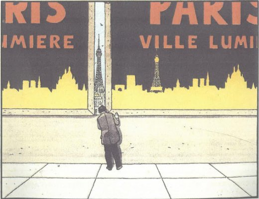

| |
Site dédié à la publication d'informations communiquées par le Collectif des déboulonneurs. En aucun cas ce site n'appelle à des actions illégales. | |
 |
||
|
Accueil du site > Paris > Procès en appel de 7 militants pour barbouillage de panneaux numériques à (...)
Le 27 mars 2019 aura lieu à Paris le 26e procès du collectif des déboulonneurs. Ce procès fait suite à l’appel interjeté par les sept militants qui avaient été condamnés en première instance en novembre 2016 (Procès de 7 militants pour barbouillage d’écrans publicitaires, Procès de 7 déboulonneurs, Délibéré du procès du 11 Octobre 2016, Jugement). 
Dessin d’André Juillard, paru dans La Croix du 23-2-1997 Le Collectif des déboulonneurs s’est formé pour combattre la publicité par la non-violence et des actions de désobéissance civile. La publicité est néfaste pour notre société et l’environnement à plusieurs titres : santé publique (troubles du comportement alimentaire, addictions, surcharge cognitive, frustration et dépression), violence et comportements à risque (éloge de la vitesse automobile, violences faites aux femmes, consumérisme et surendettement), climat (dérèglement climatique, augmentation des phénomènes climatiques extrêmes), environnement (production de déchets dangereux, épuisement et pollution des ressources), économie et justice sociale (augmentation des inégalités entre petits commerces et multinationales, etc.). Le Collectif revendique la liberté de non-réception des messages publicitaires : réduction de la taille des affiches à 50cm x 70cm, diminution du nombre de dispositifs, et interdiction des panneaux lumineux, numériques et animés. Il agit contre les panneaux présents dans l’espace public, auxquels on ne peut se soustraire, en recourant à la désobéissance civile et en invoquant l’état de nécessité : action non-violente, à visage découvert et assumée, ultime recours et légitime réponse face au danger immédiat. Le 2 mai 2015, gare de Lyon à Paris, 7 militants ont été interpelés lors d’une action sur des panneaux numériques. 5 barbouilleurs avaient inscrits des messages sur les panneaux tels que : "agression visuelle", "la pub tue", "liberté de réception", "attention à la pub en descendant du train", "la pub pollue nos rêves". Un 6e militant donnait des consignes de non-violence, et le 7e militant posait des tracts d’information sur un panneau. Plusieurs sympathisants étaient présents et des usagers ont exprimé leur soutien aux militants. Lors du procès en 1ère instance, les 7 militants ont été reconnus coupables :
Ce nouveau procès sera une opportunité pour défendre l’état de nécessité, montrer l’urgence de limiter la publicité, et demander la relaxe (obtenue le 25 mars 2013 lors d’un précédent procès). Information Pratiques : procès le mercredi 27 mars 2019 à 13h30 (se présenter une heure avant) cour d’appel de Paris (Pôle 4 chambre 10), 10 Boulevard du Palais, M° Cité Avocate : Muriel Ruef Témoin : Christophe Laurens - Architecte-paysagiste Ils nous soutiennent : Christophe André - Psychothérapeute, psychiatre et écrivain Nous avons besoin de votre soutien qui peut prendre la forme :
|
|
Site utilisant SPIP - Hébergement Ouvaton
|